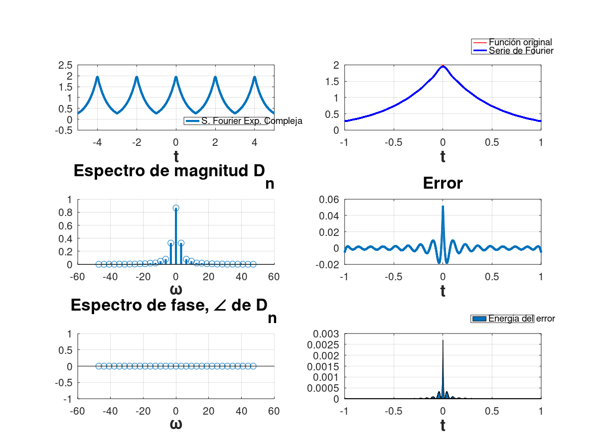
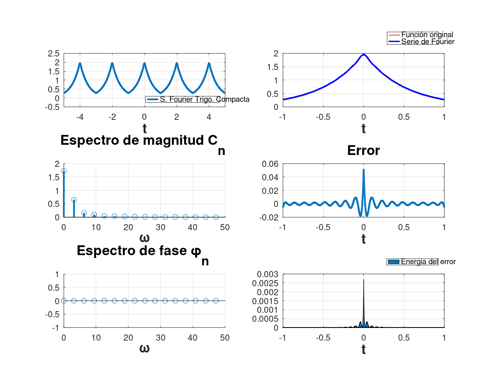

Integrantes:
$$f\left(t\right)={\textrm{ae}}^{-a\left|t\right|}$$
Su Serie de Fourier en dicho intervalo es:
$$S_f \left(t\right)=\sum_{n=-\infty }^{\infty } \frac{a^2 \left(1-e^{-a} \cos \left(\pi n\right)\right)}{a^2 +n^2 \pi^2 }e^{\textrm{jn}\pi t}$$
a) Determine el valor de $T$
b) ¿Cúal es el valor promedio de $f\left(t\right)$? (realice dos procedimientos). El valor promedio de una sẽnal periódica se define como:
$$V_p \left(f\right)=\frac{1}{T}\int_{\textrm{To}} f\left(t\right)\textrm{dt}$$
c) La componente de$f\left(t\right)$ en cierta frecuencia se puede ecpresar como $\textrm{Acos}\left(3\pi t\right)$. Determine el valor de $A$.
d) Calcule la Serie de Fourier para la señal $f\left(t\right)$ con el dato encontrado en a) y verifique que coincida con la proporcionada
Solución:
Ya que $T$ es el perido de $f\left(t\right)$haremos la igualdad $T=\textrm{T0}$ esto con la finalidad de poder respetar la nomenclatura de la Serie de Fourier
a)
De la $S_f \left(t\right)\;$que nos fue proporcionada podemos notar que $\omega_0 =\pi$ ya que:
$$S_f \left(t\right)=D_0 +\sum_{n=-\infty }^{\infty } D_n e^{{\textrm{jn}\omega }_0 t} =\sum_{n=-\infty }^{\infty } \frac{a^2 \left(1-e^{-a} \cos \left(\pi n\right)\right)}{a^2 +n^2 \pi^2 }e^{\textrm{jn}\pi t} \;\;$$
Analizando las exponenciales
$${e^{\textrm{jn}\omega_0 t} \;=e}^{\textrm{jn}\pi t} \;\Longrightarrow \omega_0 =\pi \;$$
W0=pi; T0=2*pi/W0; T0
T0 = 2
b) Declaramos las variables simbolicas a utilizar y escribimos la integral
syms a t T0 f=a*exp(-a*abs(t)) Vp=simplify(((1/T0)*int(f,-T0/2,T0/2)))
f = (sym)
-a⋅│t│
a⋅ℯ
Vp = (sym)
T₀
──
2
⌠
⎮ -a⋅│t│
a⋅ ⎮ ℯ dt
⌡
-T₀
────
2
─────────────────
T₀
Intentamos simplificar pero el software no da para más
Si ocupamos $T=2\;$que fue obtenido en el inciso anterior, el valor promedio de $f\left(t\right)$ es:
Vp=subs(Vp,T0,2)
Vp = (sym)
⎛⎧ -a ⎞
⎜⎪2 2⋅ℯ ⎟
⎜⎪─ - ───── for a > -∞ ∧ a < ∞ ∧ a ≠ 0⎟
a⋅⎜⎨a a ⎟
⎜⎪ ⎟
⎜⎪ 2 otherwise ⎟
⎝⎩ ⎠
──────────────────────────────────────────
2
c) Notemos que $\textrm{Acos}\left(3\pi t\right)$ tiene la forma $\textrm{Acos}\left(n\pi t\right)$ con $n=3$, dicha forma cumple con la forma Trigonometrica Compacta, por ende $\textrm{Acos}\left(3\pi t\right)$
seria el tercer armonico y $A$ seria el tercer coeficiente, al cual llamaremos $C_3$
syms a n assume n real assume a real Dn=(((a^2)*(1-exp(-a)*cos(pi*n)))/((a^2)+(pi*n)^2)); C3=2*abs(subs(Dn,n,3))
C3 = (sym)
2 ⎛ -a⎞
2⋅a ⋅⎝1 + ℯ ⎠
──────────────
2 2
a + 9⋅π
Si buscamos obtener $\phi_n \;$ usamos $\phi_n =\angle \left(D_n \right)$
phi3=angle(subs(Dn,n,3))
phi3 = (sym)
⎛ 2⎞
arg⎝a ⎠
d) Usaremos $\textrm{T0}=2$.
syms n t a assume n integer assume a real T0=2; W0=pi; Dn=simplify((1/T0)*int(f*exp(-n*W0*j*t),-T0/2,T0/2))
Waiting......
warning: passing floating-point values to sym is dangerous, see "help sym"
Dn = (sym)
⎛ n 2 -a 2⎞
-⎝(-1) ⋅a ⋅ℯ - a ⎠
─────────────────────
2 2 2
a + π ⋅n
La expresión obtenida para los $D_n$ es una expresión equivalente a la proporcionada
Para poder graficar haremos $a=2$
Dn=subs(Dn,a,2)
Dn = (sym)
⎛ n -2 ⎞
-⎝4⋅(-1) ⋅ℯ - 4⎠
───────────────────
2 2
π ⋅n + 4
Con lo que la Serie de Fourier exponenial compleja queda de la siguiente forma
$$S_f \left(t\right)=\sum_{n=-\infty }^{\infty } D_n e^{\textrm{jn}\pi t} =\sum_{n=-\infty }^{\infty } \frac{4e^{-2} \left(e^2 -{\left(-1\right)}^n \right)}{4+\pi^2 n^2 }e^{\textrm{jn}\pi t}$$
Para obtener la Trigonometrica Compacta.
Cn=2*abs(simplify((Dn))); Cn=simplify(Cn) Phi_n=angle(Dn) C0=abs(subs(Dn,n,0)) Phi_0=angle(subs(Dn,n,0))
Cn = (sym)
-2 │ n 2│
8⋅ℯ ⋅│(-1) - ℯ │
──────────────────
2 2
π ⋅n + 4
Phi_n = (sym)
⎛ n -2 ⎞
arg⎝- (-1) ⋅ℯ + 1⎠
C0 = (sym)
-2
1 - ℯ
Phi_0 = (sym) 0
Utilizando los $C_n ,{\;\phi }_{n\;} ,\;\phi_0$ y $C_0$ calculados ya podemos expresar la serie de Fourier en su forma Trigonometrica Compacta
$$S_f \left(t\right)=C_0 \cos \left(\phi_0 \right)+\sum_{n=1}^{\infty } C_n \cos \left(n\omega_0 t+\phi_n \right)=e^{-2} \left(e^2 -1\right)+\sum_{n=1}^{\infty } \frac{{8e}^{-2} \left(e^{-2} -{\left(-1\right)}^n \right)}{4+\pi^2 n^2 }\cos \left(n\pi t\right)$$
Existe algo llamado Error que se define de la siguiente manera
$$E=f\left(t\right)-S_f \left(t\right)$$
El cual tambien sera graficado
Exponencial Compleja
T0=2; W0=2*pi/T0; a=2; m=15; f=@(t) a*exp(-a*abs(t)); Dn=@(n) ((4*exp(-2)*(exp(2)-(-1)^n))/(4+(n*pi)^2)); D0=exp(-2)*(exp(2)-1); t= (2.5)*(-T0):0.001:(2.5)*(T0); Sfc=D0; for n=1:m Sfc=Sfc+Dn(-n)*exp(W0*-n*t*j)+Dn(n)*exp(W0*n*t*j); end figure (1); hFig = figure(1); set(hFig, 'Position', [0 0 900 900]) subplot(3,2,1) plot(t,Sfc,'LineWidth',2) grid on legend('S. Fourier Exp. Compleja','Location','southeast') xlabel('t','FontWeight','bold','FontSize',16) axis([-5 5 -0.5 2.5]) Sfc=D0; t=(-T0/2):0.0001:(T0/2); for n=1:m Sfc=Sfc+Dn(-n)*exp(W0*-n*t*j)+Dn(n)*exp(W0*n*t*j); end subplot(3,2,2) plot(t,f(t),'r','LineWidth',0.75) grid on hold on plot(t,Sfc,'b','LineWidth',1.5) legend('Función original','Serie de Fourier ','Location','Best') xlabel('t','FontWeight','bold','FontSize',16) axis auto subplot(3,2,4) Ec=f(t)-Sfc; plot(t,Ec,'LineWidth',2) title('Error','FontWeight','bold','FontSize',16) xlabel('t','FontWeight','bold','FontSize',16) axis auto grid on subplot(3,2,6) area(t,Ec.^2) legend('Energia del error','Location','Best') xlabel('t','FontWeight','bold','FontSize',16) axis auto grid on nn=-m:m; absdn=zeros(1,length(nn)); cont=1; for i =-m:m if i==0 absdn(cont)=D0; end absdn(cont)=Dn(i); cont=cont+1; end subplot(3,2,3) stem(W0*nn,abs(absdn),'LineWidth',2) title('Espectro de magnitud D_n ','FontWeight','bold','FontSize',16) xlabel('\omega','FontWeight','bold','FontSize',16) grid on subplot(3,2,5) % % stem(W0*nn,angle(absdn),'LineWidth',2) % % title('Espectro de fase, \angle de D_n ','FontWeight','bold','FontSize',16) % % xlabel('\omega','FontWeight','bold','FontSize',16) grid on
warning: legend: 'best' not yet implemented for location specifier, using 'northeast' instead warning: legend: 'best' not yet implemented for location specifier, using 'northeast' instead
Trigonometrica compacta
T0=2; W0=2*pi/T0; a=2; m=15; f=@(t) a*exp(-a*abs(t)); Cn=@(n) ((8*exp(-2)*(exp(2)-(-1)^n))/(4+(n*pi)^2)); C0=exp(-2)*(exp(2)-1); t= (2.5)*(-T0):0.001:(2.5)*(T0); phin=0; phi0=0; Sft=C0*cos(phi0); for n=1:m Sft=Sft+Cn(n)*cos(n*pi*t+phin); end figure (2); hFigg = figure(2); set(hFigg, 'Position', [0 0 900 900]) subplot(3,2,1) plot(t,Sft,'LineWidth',2) grid on legend('S. Fourier Trigo. Compacta','Location','southeast') xlabel('t','FontWeight','bold','FontSize',16) axis([-5 5 -0.5 2.5]) Sft=D0; t=(-T0/2):0.0001:(T0/2); for n=1:m Sft=Sft+Cn(n)*cos(n*pi*t+phin); end subplot(3,2,2) plot(t,f(t),'r','LineWidth',0.75) grid on hold on plot(t,Sft,'b','LineWidth',1.5) legend('Función original','Serie de Fourier ','Location','Best') xlabel('t','FontWeight','bold','FontSize',16) axis auto subplot(3,2,4) Et=f(t)-Sft; plot(t,Et,'LineWidth',2) title('Error','FontWeight','bold','FontSize',16) xlabel('t','FontWeight','bold','FontSize',16) axis auto grid on subplot(3,2,6) area(t,Et.^2) legend('Energia del error','Location','Best') xlabel('t','FontWeight','bold','FontSize',16) axis auto grid on nn=0:m; abscn=zeros(1,length(nn)); cont=1; for i =0:m if i==0 abscn(cont)=C0; end abscn(cont)=Cn(i); cont=cont+1; end nn=0:m; absdnn=zeros(1,length(nn)); cont=1; for i =0:m if i==0 absdnn(cont)=D0; end absdnn(cont)=Dn(i); cont=cont+1; end subplot(3,2,3) stem(W0*nn,abs(abscn),'LineWidth',2) title('Espectro de magnitud C_n ','FontWeight','bold','FontSize',16) xlabel('\omega','FontWeight','bold','FontSize',16) grid on subplot(3,2,5) % % stem(W0*nn,angle(absdnn),'LineWidth',2) % % title('Espectro de fase \phi_n ','FontWeight','bold','FontSize',16) % % xlabel('\omega','FontWeight','bold','FontSize',16) grid on
warning: legend: 'best' not yet implemented for location specifier, using 'northeast' instead warning: legend: 'best' not yet implemented for location specifier, using 'northeast' instead